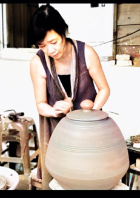

藝術家介紹
鄭滿彩，1968年1月10日出生於台灣省台北縣，現年56歲，目前從事陶藝創作歷經28年，在23歲那一年首先接觸到了新娘彩妝，並於30歲那年接觸到了陶藝並對其產生了興趣，之後跑去埔里蛇窯裡學習了4年之後從裡面離開到嘉義自行創辦出「水呆魚」這個品牌。
23歲到30歲
鄭滿彩老師年輕時原本擔任新娘秘書的工作，直到三十歲那年，再一次賣化妝品的過程，遇到一個小姐再開花店，一起去喝茶，看到那位小姐做的杯子，是她自己做的，覺得很特殊，所以開始產生興趣。之後前往南投水里的蛇窯自學陶瓷，並在4年後從裡面離開並創辦出「陶塑坊」與「水呆魚」。
離開蛇窯後
老師先與朋友們一同創辦了「陶塑坊」，總共開設了13家直營店。之後更創立了個人品牌「水呆魚工作室」
一開始老師只把陶藝當成是興趣，主要還是做新娘彩妝，但後來開始專心在陶藝技術。
她的陶藝生產模式主要分為兩類：
其一是與中國工廠合作，由鄭老師授權設計圖的部分使用權，汝窯色為台灣獨家販售，而中國工廠可以販售其他顏色，如此則能降低生產成本，提供消費者評價又優質的陶藝文創作品；其二是與虎尾監獄合作，老師指導學員燒陶技術，一方面能降低人力成本，一方面也協助學員出獄後再就業，更曾指導學員獲得創意花燈比賽獎項。
此外，她與虎尾監獄合作，由監獄協助生產相關產品，而這種合作已經持續了二十多年。她選擇將水呆魚工作室創利於嘉義蒜頭糖廠中，店內展出了多種獨特的陶藝作品。這些作品不僅包括適合商界人士的招財金蟾和符合現代風格的手工茶具，還有與日常生活緊密相連的特色淨水器。
而老師做的作品主要有茶道香道花道 甚至連水系列都有 茶壺、茶杈、杯子
2019年，「水呆魚工作室」在汐止開設分店

